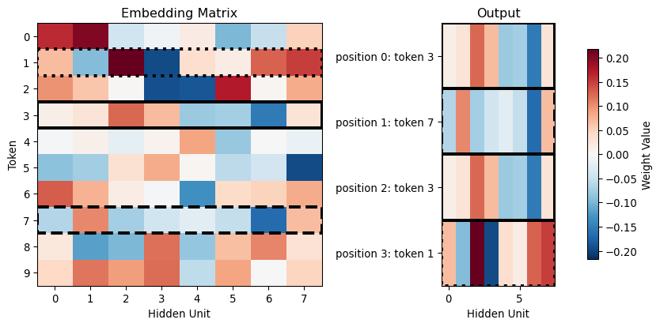
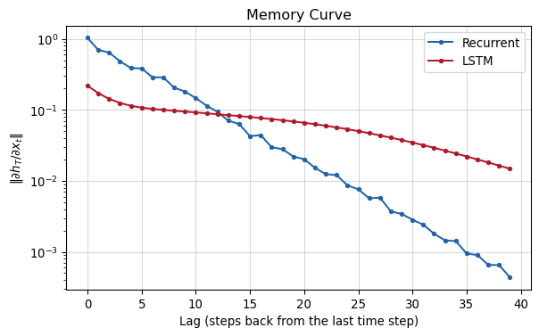
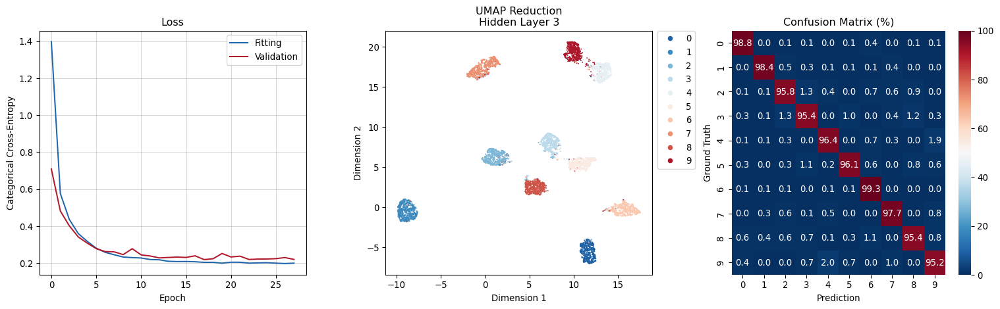
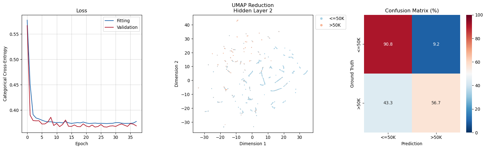
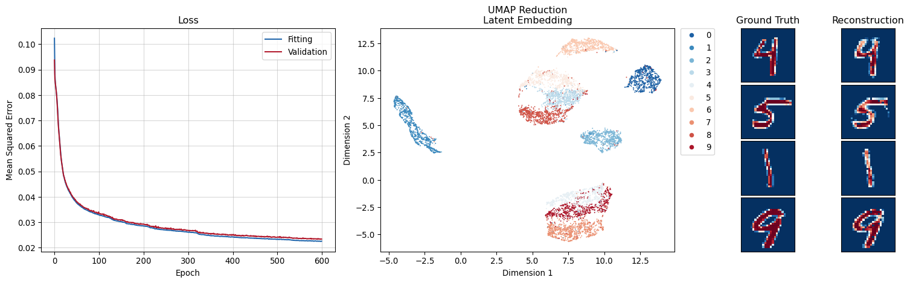
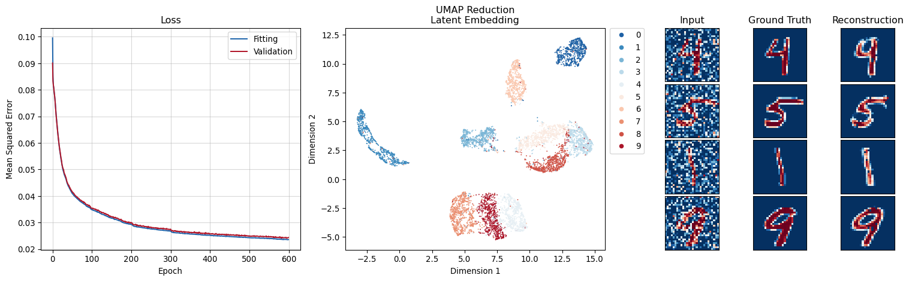
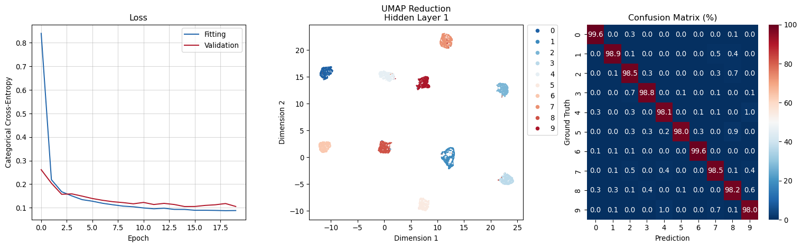

Show supplementary code
%load_ext watermark
import numpy as np
import matplotlib.pyplot as plt%load_ext watermark
import numpy as np
import matplotlib.pyplot as pltfrom typing import Any, Callable, Dict, List, Optional, Tuple
from functools import partial
import jax
import jax.numpy as jnp
from jax import jit, random
from jax.lax import scan
from jax.tree import leaves
from jax.typing import ArrayLike
KeyArray = jax.Array
CMAP = "RdBu_r"
BLUE = plt.get_cmap(CMAP)(0.1)
RED = plt.get_cmap(CMAP)(0.9)
def ones(init_state: Tuple[Tuple[int, ...], Any], random_key: ArrayLike) -> ArrayLike:
"""Initialize with a constant value of one.
Args:
init_state: state variable used for initialisation, a tuple with shape
values is always expected.
random_key: key for pseudo-random number generator.
Returns:
params: values returned as initial values for parameters.
"""
params_shape, _ = init_state
params = jnp.ones(shape=params_shape)
return params
def zeros(init_state: Tuple[Tuple[int, ...], Any], random_key: ArrayLike) -> ArrayLike:
"""Initialize with a constant value of zero.
Args:
init_state: state variable used for initialisation, a tuple with shape
values is always expected.
random_key: key for pseudo-random number generator.
Returns:
params: values returned as initial values for parameters.
"""
params_shape, _ = init_state
params = jnp.zeros(shape=params_shape)
return params
def random_uniform(
init_state: Tuple[Tuple[int, ...], Any],
random_key: ArrayLike,
min_val: float = 0.0,
max_val: float = 1.0,
) -> ArrayLike:
"""Initialize with random values sampled uniformly from min_val and max_val.
Args:
init_state: state variable used for initialisation, a tuple with shape
values is always expected.
random_key: key for pseudo-random number generator.
min_val: lower boundary of the uniform distribution.
max_val: upper boundary of the uniform distribution.
Returns:
params: values returned as initial values for parameters.
"""
params_shape, _ = init_state
params = random.uniform(
key=random_key, shape=params_shape, minval=min_val, maxval=max_val
)
return params
def random_gaussian(
init_state: Tuple[Tuple[int, ...], Any], random_key: ArrayLike, sigma: float = 0.1
) -> ArrayLike:
"""Initialize with random values sampled from a gaussian distribution with mean
zero and standard deviation of sigma.
Args:
init_state: state variable used for initialisation, a tuple with shape
values is always expected.
random_key: key for pseudo-random number generator.
sigma: standard deviation of the gaussian distribution.
Returns:
params: values returned as initial values for parameters.
"""
params_shape, _ = init_state
params = random.normal(key=random_key, shape=params_shape) * sigma
return params
@jit
def linear(x: ArrayLike) -> ArrayLike:
"""Activation function returning the identity of x
Args:
x: input to the activation function
Returns:
x: output of the activation function
"""
return x
@jit
def sigmoid(x: ArrayLike) -> ArrayLike:
"""Activation function transforming logits into probabilities (range 0, 1)
The textbook form 1 / (1 + exp(-x)) overflows for large negative x and
gives NaN gradients there, so we use the equivalent exp(-log(1 + exp(-x)))
which stays finite everywhere.
Args:
x: input to the activation function
Returns:
x: output of the activation function
"""
return jnp.exp(-jnp.logaddexp(0.0, -x))
@jit
def tanh(x: ArrayLike) -> ArrayLike:
"""Activation function returning the hyperbolic tangent of x (range -1, 1)
The definition (exp(x) - exp(-x)) / (exp(x) + exp(-x)) evaluates to inf / inf
= NaN for large |x|, so we use the identity tanh(x) = 2 * sigmoid(2x) - 1.
Args:
x: input to the activation function
Returns:
x: output of the activation function
"""
return 2 * sigmoid(x=2 * x) - 1
@jit
def relu(x: ArrayLike) -> ArrayLike:
"""Activation function returning the maximum between 0 and x (range 0, inf)
Args:
x: input to the activation function
Returns:
array: output of the activation function
"""
return jnp.maximum(0, x)
@jit
def softmax(x: ArrayLike) -> ArrayLike:
"""Activation function transforming a vector of logits into probabilities
summing to one along the last axis (range 0, 1)
Subtracting the maximum logit leaves the result unchanged but prevents
exp from overflowing for large logits.
Args:
x (array): input to the activation function
Returns:
x: output of the activation function
"""
z = x - jnp.max(x, axis=-1, keepdims=True)
return jnp.exp(z) / jnp.sum(jnp.exp(z), axis=-1, keepdims=True)
@jit
def l1(params: Any) -> ArrayLike:
"""L1 (lasso) penalty: sum of the absolute values of all the parameters.
Args:
params: pytree (e.g. dictionary) of parameters.
Returns:
l1_loss: the penalty value.
"""
l1_loss = sum([jnp.sum(jnp.abs(leaf)) for leaf in leaves(params)])
return l1_loss
@jit
def l2(params: Any) -> ArrayLike:
"""L2 (ridge) penalty: sum of the squared values of all the parameters.
Args:
params: pytree (e.g. dictionary) of parameters.
Returns:
l2_loss: the penalty value.
"""
l2_loss = sum([jnp.sum(jnp.square(leaf)) for leaf in leaves(params)])
return l2_loss
def get_regularizer(reg_type: str) -> Callable:
"""Return the regularization penalty matching a string identifier.
Args:
reg_type: either "l1" (lasso) or "l2" (ridge).
Returns:
reg_function: the corresponding penalty function.
"""
if reg_type not in REGULARIZERS:
raise ValueError(
f"reg_type must be one of {list(REGULARIZERS)}, got {reg_type!r}"
)
return REGULARIZERS[reg_type]
REGULARIZERS = {"l1": l1, "l2": l2}import warnings
import pandas as pd
import seaborn as sns
from matplotlib import gridspec
from jax.tree_util import tree_map
from tqdm import tqdm
from sklearn.metrics import confusion_matrix
from umap import UMAP
def momentum_gradient_descent(
learning_rate: float, beta: float = 0.9
) -> Tuple[Callable, Callable, Callable]:
"""Gradient descent with momentum, the optimizer introduced in the
previous chapter.
Args:
learning_rate: step size applied to the gradients.
beta: fraction of the previous update carried over to the current one.
Defaults to 0.9.
Returns:
init_state, update_state, get_params: optimizer functions as expected by fit.
"""
@jit
def init_state(params):
previous_updates = tree_map(lambda param: jnp.zeros_like(param), params)
return previous_updates, params
@jit
def update_state(grads, current_state):
previous_updates, previous_params = current_state
current_updates = tree_map(
lambda grad, previous_update: (beta * previous_update)
+ (grad * learning_rate),
grads,
previous_updates,
)
current_params = tree_map(
lambda param, update: param - update, previous_params, current_updates
)
return current_updates, current_params
@jit
def get_params(state):
_, current_params = state
return current_params
return init_state, update_state, get_params
class EarlyStopping:
def __init__(self, tol: int = 10, min_delta: float = 1e-8):
"""Naive implementation of an early stopping callback.
Args:
tol: number of consecutive iterations without improvement before
triggering the stop criteria. Defaults to 10.
min_delta: minimum decrease in loss, with respect to the best loss
seen so far, required for considering an iteration an
improvement. Defaults to 1e-8.
"""
self.tol = tol
self.min_delta = min_delta
self.reset()
def reset(self) -> None:
"""Restore the initial state so the same instance can be re-used across fits."""
self.best_loss = float("inf")
self.count = 0
self.improved = False
self.stop = False
def evaluate(self, current_loss: float) -> bool:
"""Update the state of the callback given the most recent loss.
Args:
current_loss: loss value obtained at the current iteration.
Returns:
stop: True if the loss has not improved for `tol` consecutive iterations.
"""
current_loss = float(current_loss)
self.improved = (self.best_loss - current_loss) > self.min_delta
if self.improved:
self.best_loss = current_loss
self.count = 0
else:
self.count += 1
self.stop = self.count >= self.tol
return self.stop
def shuffle_arrays(list_arrays: List[ArrayLike], random_key: ArrayLike) -> List[ArrayLike]:
"""Shuffle a list of arrays along their first axis, applying the same
permutation to all of them so that rows stay aligned.
Args:
list_arrays: arrays sharing the same size along the first axis.
random_key: key for pseudo-random number generator.
Returns:
shuffled_arrays: the arrays in list_arrays with permuted rows.
"""
random_idx = random.permutation(random_key, list_arrays[0].shape[0])
return [array[random_idx] for array in list_arrays]
def create_batches(
X: ArrayLike, y: ArrayLike, random_key: ArrayLike, batch_size: Optional[int] = None
) -> Tuple[List[ArrayLike], List[ArrayLike]]:
"""Shuffle X and y and split them into mini-batches.
Args:
X: input data with shape (n_samples, n_features).
y: target data with n_samples along the first axis.
random_key: key for pseudo-random number generator used for shuffling.
batch_size: size of each batch of data. If None the whole data is used
as a single batch. When n_samples is not a multiple of batch_size
the remainder is spread across batches. Defaults to None.
Returns:
X_batched, y_batched: lists of batches of X and y.
"""
if batch_size is None:
return [X], [y]
X, y = shuffle_arrays(list_arrays=[X, y], random_key=random_key)
n_batches = max(X.shape[0] // batch_size, 1)
return jnp.array_split(X, n_batches), jnp.array_split(y, n_batches)
def fit_step(
X: ArrayLike,
y: ArrayLike,
backward: Callable,
current_state: Tuple[Any, ...],
update_state: Callable,
get_params: Callable,
random_state: ArrayLike,
) -> Tuple[ArrayLike, Tuple[Any, ...], Any]:
"""Perform a single optimization step on one batch of data.
Args:
X: input data.
y: target data.
backward: function returning loss and gradients given X, y and params.
current_state: current state of the optimizer.
update_state: function updating the optimizer state given the gradients.
get_params: function extracting the parameters from the optimizer state.
random_state: key for pseudo-random number generator.
Returns:
loss, current_state, grads: loss before the update, updated optimizer
state and gradients used for the update.
"""
current_params = get_params(state=current_state)
loss, grads = backward(
X=X, y=y, current_params=current_params, random_state=random_state
)
current_state = update_state(grads, current_state)
return loss, current_state, grads
def fit_step_on_batch(
X: List[ArrayLike],
y: List[ArrayLike],
backward: Callable,
current_state: Tuple[Any, ...],
update_state: Callable,
get_params: Callable,
random_state: ArrayLike,
) -> Tuple[ArrayLike, Tuple[Any, ...], Any]:
"""Perform one optimization step per batch, i.e. a full epoch.
Args:
X: list of batches of input data.
y: list of batches of target data.
backward: function returning loss and gradients given X, y and params.
current_state: current state of the optimizer.
update_state: function updating the optimizer state given the gradients.
get_params: function extracting the parameters from the optimizer state.
random_state: key for pseudo-random number generator.
Returns:
loss, current_state, grads: loss averaged across batches (weighted by
batch size), updated optimizer state and gradients of the last batch.
"""
partialized_fit_step = partial(
fit_step,
backward=backward,
update_state=update_state,
get_params=get_params,
)
batch_keys = random.split(random_state, len(X))
total_loss, n_samples = 0.0, 0
for X_batch, y_batch, batch_key in zip(X, y, batch_keys):
loss, current_state, grads = partialized_fit_step(
X=X_batch,
y=y_batch,
current_state=current_state,
random_state=batch_key,
)
total_loss += loss * X_batch.shape[0]
n_samples += X_batch.shape[0]
return total_loss / n_samples, current_state, grads
def fit(
X: ArrayLike,
y: ArrayLike,
backward: Callable,
compute_loss: Callable,
start_params: Any,
optimizer: Tuple[Callable, Callable, Callable],
epochs: int,
stopper: EarlyStopping,
batch_size: Optional[int] = None,
verbose: int = 0,
random_key: int = 666,
track_grads: bool = False,
validation_size: float = .2
):
"""Fit a model to the data, using a hold-out set for early stopping.
Args:
X: input data with shape (n_samples, n_features).
y: target data with n_samples along the first axis.
backward: function returning loss and gradients given X, y and params.
compute_loss: function returning the loss given X, y and params, used
on the validation set where gradients are not needed.
start_params: initial values of the parameters.
optimizer: tuple of (init_state, update_state, get_params) functions.
epochs: maximum number of passes over the data.
stopper: early stopping callback evaluated on the validation loss.
batch_size: size of each batch of data, None for full-batch. Defaults to None.
verbose: show a progress bar updated every `verbose` epochs, 0 disables it.
Defaults to 0.
random_key: seed for the pseudo-random number generator. Defaults to 666.
track_grads: whether to store the gradients at every epoch. Defaults to False.
validation_size: fraction of the data held out for validation. Defaults to .2.
Returns:
params, history (, grads_history): parameters achieving the lowest
validation loss, per-epoch fitting and validation losses and,
if track_grads is True, per-epoch gradients.
"""
n_validation = int(X.shape[0] * validation_size)
if not 0 < n_validation < X.shape[0]:
raise ValueError(
f"validation_size={validation_size} leaves {n_validation} of {X.shape[0]} "
"samples for validation, at least one sample is needed in each split."
)
history = []
grads_history = []
random_state = random.PRNGKey(random_key)
stopper.reset()
random_state, split_key = random.split(random_state)
X, y = shuffle_arrays(list_arrays=[X, y], random_key=split_key)
X_fitting, X_validation = X[n_validation:], X[:n_validation]
y_fitting, y_validation = y[n_validation:], y[:n_validation]
init_state, update_state, get_params = optimizer
current_state = init_state(params=start_params)
best_params = get_params(state=current_state)
pbar = tqdm(range(epochs), desc="Loss", disable=verbose == 0)
for epoch in pbar:
random_state, batches_key, step_key, validation_key = random.split(random_state, 4)
X_fitting_batched, y_fitting_batched = create_batches(
X=X_fitting,
y=y_fitting,
random_key=batches_key,
batch_size=batch_size,
)
loss, current_state, grads = fit_step_on_batch(
X=X_fitting_batched,
y=y_fitting_batched,
backward=backward,
current_state=current_state,
update_state=update_state,
get_params=get_params,
random_state=step_key,
)
validation_loss = compute_loss(
X=X_validation,
y=y_validation,
current_params=get_params(state=current_state),
random_state=validation_key,
)
history.append(
{"fitting_loss": float(loss), "validation_loss": float(validation_loss)}
)
if track_grads:
grads_history.append(grads)
if verbose and epoch % verbose == 0:
pbar.set_description(
f"Loss {float(loss):.4f} - Validation Loss {float(validation_loss):.4f}"
)
stop = stopper.evaluate(current_loss=validation_loss)
if stopper.improved:
best_params = get_params(state=current_state)
if stop:
break
if track_grads:
return best_params, history, grads_history
else:
return best_params, history
def _plot_loss_history(ax: Any, history: List[Dict[str, float]], loss: str) -> None:
"""Plot fitting and validation loss per epoch as returned by fit."""
for (key, label), color in zip(
[("fitting_loss", "Fitting"), ("validation_loss", "Validation")], [BLUE, RED]
):
ax.plot([epoch[key] for epoch in history], label=label, color=color)
ax.set_title("Loss")
ax.set_ylabel(loss)
ax.set_xlabel("Epoch")
ax.grid(alpha=0.5)
ax.legend()
@jit
def mean_squared_error(y: ArrayLike, yhat: ArrayLike) -> ArrayLike:
"""Mean squared error between targets and predictions.
Args:
y: observed values.
yhat: predicted values.
Returns:
mse: the squared error averaged over all the values.
"""
return jnp.mean(jnp.square(jnp.reshape(y, yhat.shape) - yhat))
@jit
def categorical_cross_entropy(y: ArrayLike, yhat: ArrayLike, eps: float = 1e-7) -> ArrayLike:
"""Negative log-likelihood of one-hot encoded targets under a categorical
distribution.
Args:
y: one-hot encoded targets with shape (n_samples, n_classes).
yhat: predicted probabilities with shape (n_samples, n_classes).
eps: probabilities are clipped to [eps, 1] for avoiding log(0).
Defaults to 1e-7.
Returns:
nll: the negative log-likelihood averaged over observations.
"""
return -jnp.mean(jnp.sum(y * jnp.log(jnp.clip(yhat, eps, 1.0)), axis=-1))
def reduce_embedding(embedding: ArrayLike, random_state: int = 666) -> ArrayLike:
"""Reduce an embedding to two dimensions with UMAP.
Args:
embedding: embedding with shape (n_samples, n_dimensions).
random_state: seed of UMAP, for reproducible reductions. Defaults to 666.
Returns:
reduced_embedding: embedding with shape (n_samples, 2).
"""
with warnings.catch_warnings():
warnings.simplefilter("ignore")
return UMAP(n_epochs=1000, random_state=random_state).fit_transform(
np.asarray(embedding)
)
def _plot_reduced_embedding(
ax: Any,
reduced_embedding: ArrayLike,
labels: ArrayLike,
title: str,
hue_order: Optional[List[Any]] = None,
) -> None:
"""Scatter plot of a two dimensional embedding coloured by label, with the
labels listed in hue_order (sorted labels by default)."""
hue_order = hue_order if hue_order is not None else list(np.unique(labels))
reduced_embedding_df = pd.DataFrame(
reduced_embedding, columns=["Dimension 1", "Dimension 2"]
)
reduced_embedding_df["Label"] = np.asarray(labels)
sns.scatterplot(
x="Dimension 1",
y="Dimension 2",
hue="Label",
s=2,
linewidth=0,
data=reduced_embedding_df,
hue_order=hue_order,
palette=sns.color_palette(CMAP, len(hue_order)),
ax=ax,
)
ax.legend(bbox_to_anchor=(1.02, 1.0), loc=2, borderaxespad=0.0, markerscale=4)
ax.set_title(f"UMAP Reduction\n{title}")
def visualize_classifier_performance(
predictions: ArrayLike,
y_test: ArrayLike,
embedding_test: ArrayLike,
loss: str,
history: List[Dict[str, float]],
embedding_title: str,
class_names: Optional[List[str]] = None,
figsize: Tuple[int, int] = (16, 5),
) -> Any:
"""Visualize loss history, reduced embedding and confusion matrix of a classifier.
Args:
predictions: predicted class of each test sample.
y_test: observed class of each test sample.
embedding_test: two dimensional embedding of the test samples.
loss: name of the loss, used as label for the y axis.
history: per-epoch losses as returned by fit.
embedding_title: name of the layer the embedding comes from.
class_names: names of the classes, defaults to the class indices.
figsize: size of the figure. Defaults to (16, 5).
Returns:
fig, axs: matplotlib figure and axes.
"""
classes = np.arange(max(np.max(y_test), np.max(predictions)) + 1)
class_names = class_names if class_names is not None else [str(c) for c in classes]
cm = confusion_matrix(y_test, predictions, labels=classes, normalize="true")
fig, axs = plt.subplots(1, 3, figsize=figsize)
_plot_loss_history(ax=axs[0], history=history, loss=loss)
_plot_reduced_embedding(
ax=axs[1],
reduced_embedding=embedding_test,
labels=[class_names[c] for c in np.asarray(y_test)],
title=embedding_title,
hue_order=class_names,
)
sns.heatmap(
np.round(cm * 100, 1),
cmap=CMAP,
vmin=0,
vmax=100,
annot=len(classes) <= 10,
fmt=".1f",
xticklabels=class_names,
yticklabels=class_names,
ax=axs[2],
)
axs[2].set_title("Confusion Matrix (%)")
axs[2].set_xlabel("Prediction")
axs[2].set_ylabel("Ground Truth")
plt.tight_layout()
return fig, axs
def visualize_autoencoder_performance(
reconstructions: ArrayLike,
targets: ArrayLike,
labels_test: ArrayLike,
embedding_test: ArrayLike,
loss: str,
history: List[Dict[str, float]],
image_shape: Tuple[int, int],
inputs: Optional[ArrayLike] = None,
n_examples: int = 4,
random_state: int = 666,
figsize: Tuple[int, int] = (16, 5),
) -> Any:
"""Visualize loss history, reduced latent embedding and a few reconstructions
of an autoencoder trained on images.
Args:
reconstructions: reconstructed images, flattened.
targets: images the autoencoder has to reconstruct, flattened.
labels_test: class of each image, used for colouring the embedding.
embedding_test: two dimensional embedding of the images.
loss: name of the loss, used as label for the y axis.
history: per-epoch losses as returned by fit.
image_shape: shape of a single image.
inputs: images given as input when they differ from the targets (e.g.
corrupted images), shown as an extra column. Defaults to None.
n_examples: number of randomly selected reconstructions shown. Defaults to 4.
random_state: seed used for selecting the examples. Defaults to 666.
figsize: size of the figure. Defaults to (16, 5).
Returns:
fig: matplotlib figure.
"""
columns = {"Ground Truth": targets, "Reconstruction": reconstructions}
if inputs is not None:
columns = {"Input": inputs, **columns}
examples = np.random.default_rng(random_state).choice(
len(targets), n_examples, replace=False
)
fig = plt.figure(figsize=figsize)
main_grid = gridspec.GridSpec(1, 3, figure=fig, width_ratios=[3, 3, len(columns)])
sub_grid = gridspec.GridSpecFromSubplotSpec(
n_examples, len(columns), subplot_spec=main_grid[2], hspace=0.05, wspace=0.05
)
_plot_loss_history(ax=fig.add_subplot(main_grid[0]), history=history, loss=loss)
_plot_reduced_embedding(
ax=fig.add_subplot(main_grid[1]),
reduced_embedding=embedding_test,
labels=labels_test,
title="Latent Embedding",
)
for row, example in enumerate(examples):
for column, (title, images) in enumerate(columns.items()):
ax = fig.add_subplot(sub_grid[row, column])
ax.imshow(
np.asarray(images[example]).reshape(image_shape), cmap=CMAP, vmin=0, vmax=1
)
ax.set_xticks([])
ax.set_yticks([])
if row == 0:
ax.set_title(title)
plt.tight_layout()
return figdef embedding(weights_init_method: Callable) -> Tuple[Callable, ...]:
"""Embedding layer mapping integer tokens to dense vectors.
Args:
weights_init_method: initializer for the embedding matrix.
Returns:
init_params, forward: functions for initialising the parameters and
computing the embeddings.
"""
@partial(jit, static_argnums=(0, 1))
def init_params(
vocabulary_size: int, hidden_units: int, prngkey: KeyArray
) -> Dict[str, ArrayLike]:
"""Initialize the embedding matrix.
Args:
vocabulary_size: number of distinct tokens.
hidden_units: size of the embedding vectors.
prngkey: key for pseudo-random number generator.
Returns:
params: dictionary with weights of shape (vocabulary_size, hidden_units).
"""
params = {
"weights": weights_init_method(
init_state=((vocabulary_size, hidden_units), vocabulary_size),
random_key=prngkey,
)
}
return params
@jit
def forward(
X: ArrayLike, current_params: Dict[str, ArrayLike], random_state: KeyArray
) -> ArrayLike:
"""Look up the embedding of each token.
Args:
X: integer tokens of any shape.
current_params: dictionary of parameters.
random_state: key for pseudo-random number generator (unused, kept
for API compatibility with stochastic layers).
Returns:
theta: embeddings with shape X.shape + (hidden_units,).
"""
X = jnp.asarray(X, dtype=jnp.int32)
theta = current_params["weights"][X, :]
return theta
return init_params, forwardfrom matplotlib.patches import Rectangle
def visualize_embedding_lookup(
weights: ArrayLike, tokens: ArrayLike, embeddings: ArrayLike
) -> Tuple[plt.Figure, Any]:
"""Show the embedding matrix with the selected rows and the resulting output."""
limit = float(jnp.max(jnp.abs(weights)))
line_styles = ["-", "--", ":", "-."]
token_styles = {token: line_styles[i % len(line_styles)] for i, token in enumerate(dict.fromkeys(tokens.tolist()))}
fig, axs = plt.subplots(
1, 2, figsize=(11, 4.5),
gridspec_kw={"width_ratios": [weights.shape[0], len(tokens)], "wspace": 0.6},
)
for ax, matrix in zip(axs, [weights, embeddings]):
image = ax.imshow(matrix, cmap=CMAP, vmin=-limit, vmax=limit, aspect="auto")
ax.set_xlabel("Hidden Unit")
for token, style in token_styles.items():
axs[0].add_patch(
Rectangle((-0.5, token - 0.5), weights.shape[1], 1, fill=False, edgecolor="k", linestyle=style, linewidth=3)
)
for position, token in enumerate(tokens.tolist()):
axs[1].add_patch(
Rectangle((-0.5, position - 0.5), weights.shape[1], 1, fill=False,
edgecolor="k", linestyle=token_styles[token], linewidth=3)
)
axs[0].set_yticks(np.arange(weights.shape[0]))
axs[0].set_ylabel("Token")
axs[0].set_title("Embedding Matrix")
axs[1].set_yticks(np.arange(len(tokens)), [f"position {i}: token {t}" for i, t in enumerate(tokens.tolist())])
axs[1].set_title("Output")
fig.colorbar(image, ax=axs, shrink=0.8, label="Weight Value")
return fig, axsembedding_init, embedding_forward = embedding(weights_init_method=random_gaussian)
embedding_params = embedding_init(10, 8, random.PRNGKey(0))
tokens = jnp.array([3, 7, 3, 1])
embeddings = embedding_forward(tokens, embedding_params, None)
fig, axs = visualize_embedding_lookup(
weights=embedding_params["weights"], tokens=tokens, embeddings=embeddings
)
plt.show()
def dense(
weights_init_method: Callable, bias_init_method: Callable
) -> Tuple[Callable, ...]:
"""Fully connected layer computing X @ weights + bias.
Args:
weights_init_method: initializer for the weights.
bias_init_method: initializer for the bias.
Returns:
init_params, forward: functions for initialising the parameters and
computing the layer output.
"""
@partial(jit, static_argnums=(0, 1))
def init_params(
input_units: int, hidden_units: int, prngkey: KeyArray
) -> Dict[str, ArrayLike]:
"""Initialize weights and bias.
Args:
input_units: size of the last dimension of the input.
hidden_units: size of the output.
prngkey: key for pseudo-random number generator.
Returns:
params: dictionary with weights of shape (input_units, hidden_units)
and bias of shape (hidden_units,).
"""
weights_key, bias_key = random.split(prngkey)
params = {
"weights": weights_init_method(
init_state=((input_units, hidden_units), input_units),
random_key=weights_key,
),
"bias": bias_init_method(
init_state=((hidden_units,), None), random_key=bias_key
),
}
return params
@jit
def forward(
X: ArrayLike, current_params: Dict[str, ArrayLike], random_state: KeyArray
) -> ArrayLike:
"""Compute the affine transformation of the input.
Args:
X: input with shape (..., input_units).
current_params: dictionary of parameters.
random_state: key for pseudo-random number generator (unused, kept
for API compatibility with stochastic layers).
Returns:
theta: output with shape (..., hidden_units).
"""
theta = jnp.dot(X, current_params["weights"]) + current_params["bias"]
return theta
return init_params, forwarddef make_grid_lines(limit: float = 2.0, n_lines: int = 9, n_points: int = 100) -> ArrayLike:
"""Horizontal and vertical lines of a regular grid, shape (lines, points, 2)."""
positions = np.linspace(-limit, limit, n_lines)
support = np.linspace(-limit, limit, n_points)
vertical = [np.stack([np.full_like(support, p), support], axis=1) for p in positions]
horizontal = [np.stack([support, np.full_like(support, p)], axis=1) for p in positions]
return jnp.array(vertical + horizontal)
def visualize_dense_transformation(
stages: Dict[str, ArrayLike], points: Dict[str, ArrayLike], colors: ArrayLike
) -> Tuple[plt.Figure, Any]:
"""Plot the grid and the coloured points at every stage of the transformation,
using the same square axes for every stage so that they can be compared."""
all_values = jnp.concatenate(
[jnp.concatenate([lines.reshape(-1, 2), points[title]]) for title, lines in stages.items()]
)
lower, upper = float(all_values.min()), float(all_values.max())
margin = 0.05 * (upper - lower)
fig, axs = plt.subplots(1, len(stages), figsize=(4 * len(stages), 4))
for ax, (title, lines) in zip(axs, stages.items()):
for line in lines:
ax.plot(line[:, 0], line[:, 1], c="grey", linewidth=0.8)
ax.scatter(
points[title][:, 0], points[title][:, 1], c=colors, cmap=CMAP,
s=30, edgecolors="k", linewidths=0.4, zorder=3,
)
ax.set_title(title)
ax.set_xlim(lower - margin, upper + margin)
ax.set_ylim(lower - margin, upper + margin)
ax.set_aspect("equal")
ax.grid(alpha=0.3)
return fig, axsdense_init, dense_forward = dense(
weights_init_method=partial(random_gaussian, sigma=0.8),
bias_init_method=partial(random_gaussian, sigma=0.5),
)
dense_params = dense_init(2, 2, random.PRNGKey(29))
grid_lines = make_grid_lines(limit=1.0)
angles = np.linspace(0, 2 * np.pi, 40, endpoint=False)
circle = jnp.stack([np.cos(angles), np.sin(angles)], axis=1) * 0.8
def transformation_stages(X: ArrayLike) -> Dict[str, ArrayLike]:
linear_part = jnp.dot(X, dense_params["weights"])
affine_part = dense_forward(X, dense_params, None)
return {
"Input": X,
"X @ weights": linear_part,
"X @ weights + bias": affine_part,
"tanh(X @ weights + bias)": tanh(affine_part),
}
fig, axs = visualize_dense_transformation(
stages=transformation_stages(grid_lines),
points=transformation_stages(circle),
colors=angles,
)
plt.show()
def recurrent(
state_init_method: Callable,
weights_init_method: Callable,
bias_init_method: Callable,
) -> Tuple[Callable, ...]:
"""Simple (Elman) recurrent layer computing
h_t = tanh(x_t @ weights_features + h_{t-1} @ weights_hidden + bias).
Args:
state_init_method: initializer for the learned initial hidden state.
weights_init_method: initializer for the weights.
bias_init_method: initializer for the bias.
Returns:
init_params, forward: functions for initialising the parameters and
computing the sequence of hidden states.
"""
@partial(jit, static_argnums=(0, 1))
def init_params(
hidden_units: int, features_shape: int, prngkey: KeyArray
) -> Dict[str, ArrayLike]:
"""Initialize initial state, weights and bias.
The initial state is a single vector shared by all the sequences, so
that the layer works with any batch size.
Args:
hidden_units: size of the hidden state.
features_shape: number of features at each time step.
prngkey: key for pseudo-random number generator.
Returns:
params: dictionary of parameters.
"""
initial_state_key, features_key, hidden_key, bias_key = random.split(prngkey, 4)
params = {
"initial_state": state_init_method(
init_state=((hidden_units,), None),
random_key=initial_state_key,
),
"weights_features": weights_init_method(
init_state=((features_shape, hidden_units), None),
random_key=features_key,
),
"weights_hidden": weights_init_method(
init_state=((hidden_units, hidden_units), None),
random_key=hidden_key,
),
"bias": bias_init_method(
init_state=((hidden_units,), None), random_key=bias_key
),
}
return params
@jit
def forward(
X: ArrayLike, current_params: Dict[str, ArrayLike], random_state: KeyArray
) -> ArrayLike:
"""Compute the hidden state at every time step.
Args:
X: input with shape (batch, time, features).
current_params: dictionary of parameters.
random_state: key for pseudo-random number generator (unused, kept
for API compatibility with stochastic layers).
Returns:
thetas: hidden states with shape (batch, time, hidden_units).
"""
initial_state = jnp.broadcast_to(
current_params["initial_state"],
(X.shape[0], current_params["initial_state"].shape[0]),
)
X = jnp.swapaxes(X, 0, 1)
def step(hidden_state: ArrayLike, x_t: ArrayLike) -> Tuple[ArrayLike, ArrayLike]:
"""Update the hidden state, which is both carried and returned."""
theta_features = jnp.dot(x_t, current_params["weights_features"])
theta_hidden = jnp.dot(hidden_state, current_params["weights_hidden"])
hidden_state = tanh(theta_features + theta_hidden + current_params["bias"])
return hidden_state, hidden_state
_, thetas = scan(f=step, init=initial_state, xs=X)
thetas = jnp.swapaxes(thetas, 0, 1)
return thetas
return init_params, forwardfrom jax import jacobian
def make_spike_sequence(time_steps: int, spike_time: int, spike_size: float) -> ArrayLike:
"""A single sequence of one feature, zero everywhere except at spike_time."""
X = np.zeros((1, time_steps, 1))
X[0, spike_time, 0] = spike_size
return jnp.array(X)
def compute_memory_curve(forward: Callable, params: Dict[str, Any], X: ArrayLike) -> ArrayLike:
"""Norm of the derivative of the last hidden state with respect to each input,
ordered by lag (how many steps back the input is)."""
last_hidden_state = lambda X: forward(X, params, None)[0, -1, :]
derivatives = jacobian(last_hidden_state)(X)[:, 0, :, 0]
return jnp.linalg.norm(derivatives, axis=0)[::-1]
def plot_state_heatmap(
ax: Any, states: ArrayLike, title: str, spike_time: int, **imshow_kwargs: Any
) -> Any:
"""Heatmap of a state (units x time) with the time of the spike highlighted."""
image = ax.imshow(states.T, aspect="auto", interpolation="nearest", **imshow_kwargs)
ax.axvline(spike_time, c="k", linestyle=":")
ax.set_title(title)
ax.set_ylabel("Unit")
plt.colorbar(image, ax=ax)
return ax
def plot_memory_curves(ax: Any, memory_curves: Dict[str, ArrayLike]) -> Any:
"""Memory curves on a logarithmic scale."""
for (name, curve), color in zip(memory_curves.items(), [BLUE, RED]):
ax.plot(np.arange(len(curve)), curve, marker="o", markersize=3, label=name, color=color)
ax.set_yscale("log")
ax.set_xlabel("Lag (steps back from the last time step)")
ax.set_ylabel(r"$\| \partial h_T / \partial x_t \|$")
ax.set_title("Memory Curve")
ax.grid(alpha=0.5)
ax.legend()
return axTIME_STEPS, SPIKE_TIME, HIDDEN_UNITS = 40, 5, 16
spike_sequence = make_spike_sequence(TIME_STEPS, SPIKE_TIME, spike_size=3.0)
recurrent_weights_init = partial(random_gaussian, sigma=0.2)
recurrent_init, recurrent_forward = recurrent(
state_init_method=zeros,
weights_init_method=recurrent_weights_init,
bias_init_method=zeros,
)
recurrent_params = recurrent_init(HIDDEN_UNITS, 1, random.PRNGKey(2))
recurrent_states = recurrent_forward(spike_sequence, recurrent_params, None)[0]
quiet_sequence = jnp.zeros_like(spike_sequence)
recurrent_memory = compute_memory_curve(recurrent_forward, recurrent_params, quiet_sequence)
fig, axs = plt.subplots(1, 2, figsize=(13, 4), gridspec_kw={"width_ratios": [3, 2]})
plot_state_heatmap(
axs[0], recurrent_states, "Hidden State", SPIKE_TIME, cmap=CMAP, vmin=-1, vmax=1
)
axs[0].set_xlabel("Time")
plot_memory_curves(axs[1], {"Recurrent": recurrent_memory})
plt.tight_layout()
plt.show()
def lstm(
state_init_method: Callable,
weights_init_method: Callable,
bias_init_method: Callable,
forget_bias: float = 1.0,
) -> Tuple[Callable, ...]:
"""Long Short-Term Memory layer.
Args:
state_init_method: initializer for the learned initial hidden and cell states.
weights_init_method: initializer for the weights.
bias_init_method: initializer for the bias.
forget_bias: constant added to the bias of the forget gate. Starting
with the forget gate open helps the gradient flow through long
sequences early in training (Jozefowicz et al., 2015). Defaults to 1.0.
Returns:
init_params, forward: functions for initialising the parameters and
computing the sequence of hidden states.
"""
@partial(jit, static_argnums=(0, 1))
def init_params(
hidden_units: int, features_shape: int, prngkey: KeyArray
) -> Dict[str, Any]:
"""Initialize initial states and, for each gate, weights and bias.
The initial states are single vectors shared by all the sequences, so
that the layer works with any batch size.
Args:
hidden_units: size of the hidden and cell states.
features_shape: number of features at each time step.
prngkey: key for pseudo-random number generator.
Returns:
params: dictionary of parameters, with one sub-dictionary per gate.
"""
initial_hidden_key, initial_conveyor_key, seed_key = random.split(prngkey, 3)
params = {
"initial_hidden": state_init_method(
init_state=((hidden_units,), None),
random_key=initial_hidden_key,
),
"initial_conveyor": state_init_method(
init_state=((hidden_units,), None),
random_key=initial_conveyor_key,
),
}
for gate in ["forget_gate", "input_gate", "cell_gate", "output_gate"]:
weights_input_key, weights_hidden_key, bias_key, seed_key = random.split(
seed_key, 4
)
params[gate] = {
"weights_input": weights_init_method(
init_state=((features_shape, hidden_units), None),
random_key=weights_input_key,
),
"weights_hidden": weights_init_method(
init_state=((hidden_units, hidden_units), None),
random_key=weights_hidden_key,
),
"bias": bias_init_method(
init_state=((hidden_units,), None), random_key=bias_key
),
}
params["forget_gate"]["bias"] = params["forget_gate"]["bias"] + forget_bias
return params
@jit
def forward(
X: ArrayLike, current_params: Dict[str, Any], random_state: KeyArray
) -> ArrayLike:
"""Compute the hidden state at every time step.
Args:
X: input with shape (batch, time, features).
current_params: dictionary of parameters.
random_state: key for pseudo-random number generator (unused, kept
for API compatibility with stochastic layers).
Returns:
thetas: hidden states with shape (batch, time, hidden_units).
"""
batch_size = X.shape[0]
hidden_units = current_params["initial_hidden"].shape[0]
initial_hidden = jnp.broadcast_to(
current_params["initial_hidden"], (batch_size, hidden_units)
)
initial_conveyor = jnp.broadcast_to(
current_params["initial_conveyor"], (batch_size, hidden_units)
)
X = jnp.swapaxes(X, 0, 1)
def gate_activation(
gate_params: Dict[str, ArrayLike], hidden_state: ArrayLike, x_t: ArrayLike
) -> ArrayLike:
"""Linear combination of previous hidden state and current input for one gate."""
return (
jnp.dot(hidden_state, gate_params["weights_hidden"])
+ jnp.dot(x_t, gate_params["weights_input"])
+ gate_params["bias"]
)
def step(
carry: Tuple[ArrayLike, ArrayLike], x_t: ArrayLike
) -> Tuple[Tuple[ArrayLike, ArrayLike], ArrayLike]:
"""Update hidden state and conveyor belt (cell state) for one time step."""
hidden_state, conveyor_belt = carry
forget_hidden = sigmoid(
gate_activation(current_params["forget_gate"], hidden_state, x_t)
)
input_hidden = sigmoid(
gate_activation(current_params["input_gate"], hidden_state, x_t)
)
output_hidden = sigmoid(
gate_activation(current_params["output_gate"], hidden_state, x_t)
)
conveyor_hat = tanh(
gate_activation(current_params["cell_gate"], hidden_state, x_t)
)
conveyor_belt_new = (forget_hidden * conveyor_belt) + (
input_hidden * conveyor_hat
)
hidden_state_new = output_hidden * tanh(conveyor_belt_new)
return (hidden_state_new, conveyor_belt_new), hidden_state_new
_, thetas = scan(
f=step,
init=(initial_hidden, initial_conveyor),
xs=X,
)
thetas = jnp.swapaxes(thetas, 0, 1)
return thetas
return init_params, forwarddef compute_lstm_inner_states(X: ArrayLike, params: Dict[str, Any]) -> Dict[str, ArrayLike]:
"""Re-compute the LSTM gates and states for a single sequence, step by step."""
hidden_state, conveyor_belt = params["initial_hidden"], params["initial_conveyor"]
gate = lambda name, h, x: (
jnp.dot(h, params[name]["weights_hidden"])
+ jnp.dot(x, params[name]["weights_input"])
+ params[name]["bias"]
)
inner_states = {name: [] for name in ["Forget Gate", "Input Gate", "Output Gate", "Conveyor Belt", "Hidden State"]}
for x_t in X[0]:
forget_hidden = sigmoid(gate("forget_gate", hidden_state, x_t))
input_hidden = sigmoid(gate("input_gate", hidden_state, x_t))
output_hidden = sigmoid(gate("output_gate", hidden_state, x_t))
conveyor_hat = tanh(gate("cell_gate", hidden_state, x_t))
conveyor_belt = forget_hidden * conveyor_belt + input_hidden * conveyor_hat
hidden_state = output_hidden * tanh(conveyor_belt)
for name, value in zip(
inner_states,
[forget_hidden, input_hidden, output_hidden, conveyor_belt, hidden_state],
):
inner_states[name].append(value)
return {name: jnp.stack(values) for name, values in inner_states.items()}lstm_init, lstm_forward = lstm(
state_init_method=zeros,
weights_init_method=recurrent_weights_init,
bias_init_method=zeros,
)
lstm_params = lstm_init(HIDDEN_UNITS, 1, random.PRNGKey(2))
lstm_inner_states = compute_lstm_inner_states(spike_sequence, lstm_params)
assert jnp.allclose(
lstm_inner_states["Hidden State"], lstm_forward(spike_sequence, lstm_params, None)[0], atol=1e-6
)
fig, axs = plt.subplots(5, 1, figsize=(10, 12), sharex=True)
for ax, (name, states) in zip(axs, lstm_inner_states.items()):
if "Gate" in name:
plot_state_heatmap(ax, states, name, SPIKE_TIME, cmap=CMAP, vmin=0, vmax=1)
else:
limit = float(jnp.max(jnp.abs(states)))
plot_state_heatmap(ax, states, name, SPIKE_TIME, cmap=CMAP, vmin=-limit, vmax=limit)
axs[-1].set_xlabel("Time")
plt.tight_layout()
plt.show()
lstm_memory = compute_memory_curve(lstm_forward, lstm_params, quiet_sequence)
fig, ax = plt.subplots(1, 1, figsize=(7, 4))
plot_memory_curves(ax, {"Recurrent": recurrent_memory, "LSTM": lstm_memory})
plt.show()
from sklearn.datasets import fetch_openml
from sklearn.model_selection import train_test_split
from sklearn.preprocessing import MinMaxScaler, OneHotEncoder, OrdinalEncoder
MASTER_KEY = random.PRNGKey(666)
mnist_X, mnist_y = fetch_openml("mnist_784", return_X_y=True, as_frame=False)
mnist_y = OneHotEncoder(sparse_output=False).fit_transform(mnist_y.astype(int).reshape(-1, 1))
X_train, X_test, y_train, y_test = train_test_split(
mnist_X,
mnist_y,
test_size=0.1,
random_state=666
)
scaler = MinMaxScaler()
X_train = jnp.array(scaler.fit_transform(X_train), dtype=jnp.float32)
X_test = jnp.array(scaler.transform(X_test), dtype=jnp.float32)
y_train = jnp.array(y_train, dtype=jnp.float32)
y_test = jnp.array(y_test, dtype=jnp.float32)adult = fetch_openml(data_id=1590, as_frame=True).frame
adult_features = adult.drop(columns=["class"]).select_dtypes("category").apply(
lambda column: column.cat.add_categories("missing").fillna("missing")
)
adult_encoder = OrdinalEncoder(dtype=int)
adult_X = adult_encoder.fit_transform(adult_features)
adult_vocabulary_sizes = tuple(len(categories) for categories in adult_encoder.categories_)
adult_target_encoder = OneHotEncoder(sparse_output=False)
adult_y = adult_target_encoder.fit_transform(adult[["class"]])
adult_class_names = list(adult_target_encoder.categories_[0])
adult_X_train, adult_X_test, adult_y_train, adult_y_test = train_test_split(
adult_X,
adult_y,
test_size=0.1,
random_state=666
)
adult_X_train, adult_X_test = jnp.array(adult_X_train), jnp.array(adult_X_test)
adult_y_train = jnp.array(adult_y_train, dtype=jnp.float32)
adult_y_test = jnp.array(adult_y_test, dtype=jnp.float32)from jax import value_and_grad
def multilayer_perceptron(
layers: Tuple[int, ...],
weights_init_method: Callable,
bias_init_method: Callable,
hidden_link_function: Callable,
link_function: Callable,
loss_function: Callable,
prngkey: KeyArray,
reg_type: str = "l2",
reg_strength: float = 0.01,
) -> Tuple[Callable, ...]:
"""Multilayer perceptron made of dense layers.
Args:
layers: number of hidden units of each hidden layer.
weights_init_method: initializer for the weights of every layer.
bias_init_method: initializer for the bias of every layer.
hidden_link_function: activation applied after every hidden layer.
link_function: inverse link function applied to the output layer.
loss_function: loss comparing targets and predictions, taking y and yhat.
prngkey: key for pseudo-random number generator used for initialisation.
reg_type: penalty applied to the weights (not the biases), either "l1"
(lasso) or "l2" (ridge). Defaults to "l2".
reg_strength: multiplier of the regularization penalty. Defaults to 0.01.
Returns:
init_params, forward, compute_loss, backward, extract_embedding: functions
for initialising the parameters, computing predictions, computing the
loss, computing loss and gradients and computing the activations of
a hidden layer.
"""
dense_init_params, dense_forward = dense(
weights_init_method=weights_init_method,
bias_init_method=bias_init_method,
)
reg_function = get_regularizer(reg_type)
n_hidden_layers = len(layers)
@partial(jit, static_argnums=(0, 1))
def init_params(input_units: int, output_units: int) -> Dict[int, Dict[str, ArrayLike]]:
"""Initialize the parameters of every layer.
Args:
input_units: number of input features.
output_units: number of outputs.
Returns:
params: dictionary with the parameters of each layer, indexed by
layer position (the last one is the output layer).
"""
units = (input_units, *layers, output_units)
layer_keys = random.split(prngkey, n_hidden_layers + 1)
params = {
layer: dense_init_params(units[layer], units[layer + 1], layer_keys[layer])
for layer in range(n_hidden_layers + 1)
}
return params
@partial(jit, static_argnames=("target_layer",))
def extract_embedding(
X: ArrayLike,
current_params: Dict[int, Dict[str, ArrayLike]],
target_layer: int,
random_state: KeyArray,
) -> ArrayLike:
"""Compute the activations of a hidden layer.
Args:
X: input with shape (n_samples, input_units).
current_params: dictionary of parameters.
target_layer: number of hidden layers to apply, 0 returns the input.
random_state: key for pseudo-random number generator (unused, kept
for API compatibility with stochastic layers).
Returns:
theta: activations of the target layer.
"""
theta = X
for layer in range(target_layer):
theta = dense_forward(
X=theta, current_params=current_params[layer], random_state=random_state
)
theta = hidden_link_function(theta)
return theta
@jit
def forward(
X: ArrayLike,
current_params: Dict[int, Dict[str, ArrayLike]],
random_state: KeyArray,
) -> ArrayLike:
"""Compute the predictions.
Args:
X: input with shape (n_samples, input_units).
current_params: dictionary of parameters.
random_state: key for pseudo-random number generator.
Returns:
yhat: predictions with shape (n_samples, output_units).
"""
theta = extract_embedding(
X=X,
current_params=current_params,
target_layer=n_hidden_layers,
random_state=random_state,
)
theta = dense_forward(
X=theta,
current_params=current_params[n_hidden_layers],
random_state=random_state,
)
yhat = link_function(theta)
return yhat
@jit
def compute_loss(
X: ArrayLike,
y: ArrayLike,
current_params: Dict[int, Dict[str, ArrayLike]],
random_state: KeyArray,
) -> ArrayLike:
"""Compute the loss plus the penalty on the weights.
Args:
X: input with shape (n_samples, input_units).
y: targets with n_samples along the first axis.
current_params: dictionary of parameters.
random_state: key for pseudo-random number generator.
Returns:
loss: loss plus the penalty on the weights of every layer.
"""
yhat = forward(X=X, current_params=current_params, random_state=random_state)
raw_loss = loss_function(y=y, yhat=yhat)
weights = {layer: params["weights"] for layer, params in current_params.items()}
reg_loss = reg_function(params=weights) * reg_strength
return raw_loss + reg_loss
@jit
def backward(
X: ArrayLike,
y: ArrayLike,
current_params: Dict[int, Dict[str, ArrayLike]],
random_state: KeyArray,
) -> Tuple[ArrayLike, Dict[int, Dict[str, ArrayLike]]]:
"""Compute the loss and its gradients with respect to the parameters.
Args:
X: input with shape (n_samples, input_units).
y: targets with n_samples along the first axis.
current_params: dictionary of parameters.
random_state: key for pseudo-random number generator.
Returns:
loss, grads: loss value and gradients with the same structure as current_params.
"""
grad_func = value_and_grad(
lambda params: compute_loss(
X=X, y=y, current_params=params, random_state=random_state
)
)
loss, grads = grad_func(current_params)
return loss, grads
return init_params, forward, compute_loss, backward, extract_embeddingmlp_init_params, mlp_forward, mlp_compute_loss, mlp_backward, mlp_extract_embedding = multilayer_perceptron(
layers=(50, 25, 10),
weights_init_method=random_gaussian,
bias_init_method=random_gaussian,
hidden_link_function=relu,
link_function=softmax,
loss_function=categorical_cross_entropy,
prngkey=random.fold_in(MASTER_KEY, 1),
reg_type="l2",
reg_strength=0.001,
)
mlp_params, mlp_history = fit(
X=X_train,
y=y_train,
backward=mlp_backward,
compute_loss=mlp_compute_loss,
start_params=mlp_init_params(X_train.shape[1], 10),
optimizer=momentum_gradient_descent(learning_rate=0.05),
epochs=50,
stopper=EarlyStopping(tol=10),
batch_size=256,
)mlp_predictions = np.asarray(mlp_forward(X=X_test, current_params=mlp_params, random_state=None).argmax(1))
mlp_embedding = reduce_embedding(
mlp_extract_embedding(X=X_test, current_params=mlp_params, target_layer=3, random_state=None)
)
fig, axs = visualize_classifier_performance(
predictions=mlp_predictions,
y_test=np.asarray(y_test.argmax(1)),
embedding_test=mlp_embedding,
loss="Categorical Cross-Entropy",
history=mlp_history,
embedding_title="Hidden Layer 3",
)
plt.show()
def multilayer_perceptron_with_embeddings(
vocabulary_sizes: Tuple[int, ...],
embedding_units: Tuple[int, ...],
layers: Tuple[int, ...],
weights_init_method: Callable,
bias_init_method: Callable,
hidden_link_function: Callable,
link_function: Callable,
loss_function: Callable,
prngkey: KeyArray,
reg_type: str = "l2",
reg_strength: float = 0.01,
) -> Tuple[Callable, ...]:
"""Multilayer perceptron taking categorical features through embedding layers.
Args:
vocabulary_sizes: number of categories of each categorical feature.
embedding_units: size of the embedding vectors of each categorical feature.
layers: number of hidden units of each hidden layer of the perceptron.
weights_init_method: initializer for the embeddings and the dense weights.
bias_init_method: initializer for the dense biases.
hidden_link_function: activation applied after every hidden layer.
link_function: inverse link function applied to the output layer.
loss_function: loss comparing targets and predictions, taking y and yhat.
prngkey: key for pseudo-random number generator used for initialisation.
reg_type: penalty applied to the embeddings and to the dense weights (not
the biases), either "l1" (lasso) or "l2" (ridge). Defaults to "l2".
reg_strength: multiplier of the regularization penalty. Defaults to 0.01.
Returns:
init_params, forward, compute_loss, backward, extract_embedding: functions
for initialising the parameters, computing predictions, computing the
loss, computing loss and gradients and computing the activations of
a hidden layer.
"""
if len(vocabulary_sizes) != len(embedding_units):
raise ValueError(
"vocabulary_sizes and embedding_units must have one entry per categorical "
f"feature, got {len(vocabulary_sizes)} and {len(embedding_units)}"
)
n_features = len(vocabulary_sizes)
embedding_keys = random.split(prngkey, n_features + 1)
embedding_init_params, embedding_forward = embedding(
weights_init_method=weights_init_method
)
mlp_init_params, mlp_forward, _, _, mlp_extract_embedding = multilayer_perceptron(
layers=layers,
weights_init_method=weights_init_method,
bias_init_method=bias_init_method,
hidden_link_function=hidden_link_function,
link_function=link_function,
loss_function=loss_function,
prngkey=embedding_keys[-1],
reg_type=reg_type,
reg_strength=reg_strength,
)
reg_function = get_regularizer(reg_type)
def init_params(output_units: int) -> Dict[str, Any]:
"""Initialize the embeddings of every feature and the perceptron.
Args:
output_units: number of outputs.
Returns:
params: dictionary with the embeddings of each feature, indexed by
feature position, and the parameters of the perceptron.
"""
params = {
"embeddings": {
feature: embedding_init_params(
vocabulary_sizes[feature],
embedding_units[feature],
embedding_keys[feature],
)
for feature in range(n_features)
},
"mlp": mlp_init_params(sum(embedding_units), output_units),
}
return params
@jit
def embed(
X: ArrayLike, current_params: Dict[str, Any], random_state: KeyArray
) -> ArrayLike:
"""Embed every categorical feature and concatenate the embeddings.
Args:
X: integer codes with shape (n_samples, n_features).
current_params: dictionary of parameters.
random_state: key for pseudo-random number generator.
Returns:
theta: concatenated embeddings with shape (n_samples, sum(embedding_units)).
"""
embeddings = [
embedding_forward(
X=X[:, feature],
current_params=current_params["embeddings"][feature],
random_state=random_state,
)
for feature in range(n_features)
]
return jnp.concatenate(embeddings, axis=-1)
@partial(jit, static_argnames=("target_layer",))
def extract_embedding(
X: ArrayLike,
current_params: Dict[str, Any],
target_layer: int,
random_state: KeyArray,
) -> ArrayLike:
"""Compute the activations of a hidden layer.
Args:
X: integer codes with shape (n_samples, n_features).
current_params: dictionary of parameters.
target_layer: number of hidden layers to apply, 0 returns the
concatenated embeddings.
random_state: key for pseudo-random number generator.
Returns:
theta: activations of the target layer.
"""
theta = embed(X=X, current_params=current_params, random_state=random_state)
return mlp_extract_embedding(
X=theta,
current_params=current_params["mlp"],
target_layer=target_layer,
random_state=random_state,
)
@jit
def forward(
X: ArrayLike, current_params: Dict[str, Any], random_state: KeyArray
) -> ArrayLike:
"""Compute the predictions.
Args:
X: integer codes with shape (n_samples, n_features).
current_params: dictionary of parameters.
random_state: key for pseudo-random number generator.
Returns:
yhat: predictions with shape (n_samples, output_units).
"""
theta = embed(X=X, current_params=current_params, random_state=random_state)
return mlp_forward(
X=theta, current_params=current_params["mlp"], random_state=random_state
)
@jit
def compute_loss(
X: ArrayLike,
y: ArrayLike,
current_params: Dict[str, Any],
random_state: KeyArray,
) -> ArrayLike:
"""Compute the loss plus the penalty on embeddings and dense weights.
Args:
X: integer codes with shape (n_samples, n_features).
y: targets with n_samples along the first axis.
current_params: dictionary of parameters.
random_state: key for pseudo-random number generator.
Returns:
loss: loss plus the penalty on embeddings and dense weights.
"""
yhat = forward(X=X, current_params=current_params, random_state=random_state)
raw_loss = loss_function(y=y, yhat=yhat)
weights = {
"embeddings": [params["weights"] for params in current_params["embeddings"].values()],
"mlp": [params["weights"] for params in current_params["mlp"].values()],
}
reg_loss = reg_function(params=weights) * reg_strength
return raw_loss + reg_loss
@jit
def backward(
X: ArrayLike,
y: ArrayLike,
current_params: Dict[str, Any],
random_state: KeyArray,
) -> Tuple[ArrayLike, Dict[str, Any]]:
"""Compute the loss and its gradients with respect to the parameters.
Args:
X: integer codes with shape (n_samples, n_features).
y: targets with n_samples along the first axis.
current_params: dictionary of parameters.
random_state: key for pseudo-random number generator.
Returns:
loss, grads: loss value and gradients with the same structure as current_params.
"""
grad_func = value_and_grad(
lambda params: compute_loss(
X=X, y=y, current_params=params, random_state=random_state
)
)
loss, grads = grad_func(current_params)
return loss, grads
return init_params, forward, compute_loss, backward, extract_embedding(
embedding_mlp_init_params,
embedding_mlp_forward,
embedding_mlp_compute_loss,
embedding_mlp_backward,
embedding_mlp_extract_embedding,
) = multilayer_perceptron_with_embeddings(
vocabulary_sizes=adult_vocabulary_sizes,
embedding_units=tuple(min(10, (size + 1) // 2) for size in adult_vocabulary_sizes),
layers=(32, 16),
weights_init_method=random_gaussian,
bias_init_method=random_gaussian,
hidden_link_function=relu,
link_function=softmax,
loss_function=categorical_cross_entropy,
prngkey=random.fold_in(MASTER_KEY, 2),
reg_type="l2",
reg_strength=0.001,
)
embedding_mlp_params, embedding_mlp_history = fit(
X=adult_X_train,
y=adult_y_train,
backward=embedding_mlp_backward,
compute_loss=embedding_mlp_compute_loss,
start_params=embedding_mlp_init_params(len(adult_class_names)),
optimizer=momentum_gradient_descent(learning_rate=0.05),
epochs=50,
stopper=EarlyStopping(tol=10),
batch_size=256,
)embedding_mlp_predictions = np.asarray(
embedding_mlp_forward(X=adult_X_test, current_params=embedding_mlp_params, random_state=None).argmax(1)
)
embedding_mlp_embedding = reduce_embedding(
embedding_mlp_extract_embedding(
X=adult_X_test, current_params=embedding_mlp_params, target_layer=2, random_state=None
)
)
fig, axs = visualize_classifier_performance(
predictions=embedding_mlp_predictions,
y_test=np.asarray(adult_y_test.argmax(1)),
embedding_test=embedding_mlp_embedding,
loss="Categorical Cross-Entropy",
history=embedding_mlp_history,
embedding_title="Hidden Layer 2",
class_names=adult_class_names,
)
plt.show()
def vanilla_autoencoder(
layers: Tuple[int, ...],
embedding_size: int,
weights_init_method: Callable,
bias_init_method: Callable,
hidden_link_function: Callable,
link_function: Callable,
loss_function: Callable,
prngkey: KeyArray,
reg_type: str = "l2",
reg_strength: float = 0.01,
) -> Tuple[Callable, ...]:
"""Autoencoder made of dense layers, with a decoder mirroring the encoder.
Args:
layers: number of hidden units of each hidden layer of the encoder, the
decoder uses the same layers in reverse order.
embedding_size: size of the latent embedding.
weights_init_method: initializer for the weights of every layer.
bias_init_method: initializer for the bias of every layer.
hidden_link_function: activation applied after every hidden layer.
link_function: inverse link function applied to the reconstruction.
loss_function: loss comparing targets and reconstructions, taking y and yhat.
prngkey: key for pseudo-random number generator used for initialisation.
reg_type: penalty applied to the weights (not the biases), either "l1"
(lasso) or "l2" (ridge). Defaults to "l2".
reg_strength: multiplier of the regularization penalty. Defaults to 0.01.
Returns:
init_params, forward, compute_loss, backward, extract_embedding: functions
for initialising the parameters, reconstructing the input, computing
the loss, computing loss and gradients and computing the latent
embedding.
"""
dense_init_params, dense_forward = dense(
weights_init_method=weights_init_method,
bias_init_method=bias_init_method,
)
reg_function = get_regularizer(reg_type)
n_hidden_layers = len(layers)
@partial(jit, static_argnums=(0,))
def init_params(input_units: int) -> Dict[str, Dict[str, ArrayLike]]:
"""Initialize the parameters of encoder, latent embedding and decoder.
Args:
input_units: number of input features, which is also the size of
the reconstruction.
Returns:
params: dictionary with the parameters of each layer, named
encoder_i, latent_embedding and decoder_i.
"""
names = (
[f"encoder_{layer}" for layer in range(n_hidden_layers)]
+ ["latent_embedding"]
+ [f"decoder_{layer}" for layer in range(n_hidden_layers + 1)]
)
units = (input_units, *layers, embedding_size, *layers[::-1], input_units)
layer_keys = random.split(prngkey, len(names))
params = {
name: dense_init_params(units[position], units[position + 1], layer_keys[position])
for position, name in enumerate(names)
}
return params
@jit
def extract_embedding(
X: ArrayLike,
current_params: Dict[str, Dict[str, ArrayLike]],
random_state: KeyArray,
) -> ArrayLike:
"""Encode the input into the latent embedding.
Args:
X: input with shape (n_samples, input_units).
current_params: dictionary of parameters.
random_state: key for pseudo-random number generator (unused, kept
for API compatibility with stochastic layers).
Returns:
theta: latent embedding with shape (n_samples, embedding_size).
"""
theta = X
for layer in range(n_hidden_layers):
theta = dense_forward(
X=theta,
current_params=current_params[f"encoder_{layer}"],
random_state=random_state,
)
theta = hidden_link_function(theta)
theta = dense_forward(
X=theta,
current_params=current_params["latent_embedding"],
random_state=random_state,
)
return theta
@jit
def forward(
X: ArrayLike,
current_params: Dict[str, Dict[str, ArrayLike]],
random_state: KeyArray,
) -> ArrayLike:
"""Reconstruct the input by encoding and then decoding it.
Args:
X: input with shape (n_samples, input_units).
current_params: dictionary of parameters.
random_state: key for pseudo-random number generator.
Returns:
yhat: reconstruction with shape (n_samples, input_units).
"""
theta = extract_embedding(
X=X, current_params=current_params, random_state=random_state
)
for layer in range(n_hidden_layers):
theta = dense_forward(
X=theta,
current_params=current_params[f"decoder_{layer}"],
random_state=random_state,
)
theta = hidden_link_function(theta)
theta = dense_forward(
X=theta,
current_params=current_params[f"decoder_{n_hidden_layers}"],
random_state=random_state,
)
yhat = link_function(theta)
return yhat
@jit
def compute_loss(
X: ArrayLike,
y: ArrayLike,
current_params: Dict[str, Dict[str, ArrayLike]],
random_state: KeyArray,
) -> ArrayLike:
"""Compute the reconstruction loss plus the penalty on the weights.
Args:
X: input with shape (n_samples, input_units).
y: target of the reconstruction, usually X itself.
current_params: dictionary of parameters.
random_state: key for pseudo-random number generator.
Returns:
loss: reconstruction loss plus the penalty on the weights of every layer.
"""
yhat = forward(X=X, current_params=current_params, random_state=random_state)
raw_loss = loss_function(y=y, yhat=yhat)
weights = {name: params["weights"] for name, params in current_params.items()}
reg_loss = reg_function(params=weights) * reg_strength
return raw_loss + reg_loss
@jit
def backward(
X: ArrayLike,
y: ArrayLike,
current_params: Dict[str, Dict[str, ArrayLike]],
random_state: KeyArray,
) -> Tuple[ArrayLike, Dict[str, Dict[str, ArrayLike]]]:
"""Compute the loss and its gradients with respect to the parameters.
Args:
X: input with shape (n_samples, input_units).
y: target of the reconstruction, usually X itself.
current_params: dictionary of parameters.
random_state: key for pseudo-random number generator.
Returns:
loss, grads: loss value and gradients with the same structure as current_params.
"""
grad_func = value_and_grad(
lambda params: compute_loss(
X=X, y=y, current_params=params, random_state=random_state
)
)
loss, grads = grad_func(current_params)
return loss, grads
return init_params, forward, compute_loss, backward, extract_embedding(
autoencoder_init_params,
autoencoder_forward,
autoencoder_compute_loss,
autoencoder_backward,
autoencoder_extract_embedding,
) = vanilla_autoencoder(
layers=(125, 100, 75),
embedding_size=50,
weights_init_method=random_gaussian,
bias_init_method=random_gaussian,
hidden_link_function=relu,
link_function=relu,
loss_function=mean_squared_error,
prngkey=random.fold_in(MASTER_KEY, 3),
reg_type="l2",
reg_strength=1e-6,
)
autoencoder_images = np.random.default_rng(666).choice(X_train.shape[0], 10000, replace=False)
X_train_autoencoder = X_train[autoencoder_images]
autoencoder_params, autoencoder_history = fit(
X=X_train_autoencoder,
y=X_train_autoencoder,
backward=autoencoder_backward,
compute_loss=autoencoder_compute_loss,
start_params=autoencoder_init_params(X_train.shape[1]),
optimizer=momentum_gradient_descent(learning_rate=0.5),
epochs=600,
stopper=EarlyStopping(tol=200),
batch_size=256,
)autoencoder_embedding = reduce_embedding(
autoencoder_extract_embedding(X=X_test, current_params=autoencoder_params, random_state=None)
)
autoencoder_reconstructions = autoencoder_forward(X=X_test, current_params=autoencoder_params, random_state=None)
fig = visualize_autoencoder_performance(
reconstructions=autoencoder_reconstructions,
targets=X_test,
labels_test=np.asarray(y_test.argmax(1)),
embedding_test=autoencoder_embedding,
loss="Mean Squared Error",
history=autoencoder_history,
image_shape=(28, 28),
)
plt.show()
def gaussian_noise(X: ArrayLike, random_key: KeyArray, sigma: float = 0.1) -> ArrayLike:
"""Corrupt the input by adding gaussian noise.
Args:
X: input to corrupt.
random_key: key for pseudo-random number generator.
sigma: standard deviation of the noise. Defaults to 0.1.
Returns:
X_corrupted: input plus gaussian noise.
"""
return X + sigma * random.normal(random_key, X.shape)
def masking_noise(X: ArrayLike, random_key: KeyArray, rate: float = 0.2) -> ArrayLike:
"""Corrupt the input by setting a random fraction of its values to zero.
Args:
X: input to corrupt.
random_key: key for pseudo-random number generator.
rate: probability of each value being set to zero. Defaults to 0.2.
Returns:
X_corrupted: input with a random fraction of values set to zero.
"""
return X * random.bernoulli(random_key, 1 - rate, X.shape)def denoising_autoencoder(
layers: Tuple[int, ...],
embedding_size: int,
corruption_function: Callable,
weights_init_method: Callable,
bias_init_method: Callable,
hidden_link_function: Callable,
link_function: Callable,
loss_function: Callable,
prngkey: KeyArray,
reg_type: str = "l2",
reg_strength: float = 0.01,
) -> Tuple[Callable, ...]:
"""Autoencoder trained to reconstruct the clean input from a corrupted one.
Args:
layers: number of hidden units of each hidden layer of the encoder, the
decoder uses the same layers in reverse order.
embedding_size: size of the latent embedding, which can also be larger
than the input.
corruption_function: function corrupting the input, taking X and random_key.
weights_init_method: initializer for the weights of every layer.
bias_init_method: initializer for the bias of every layer.
hidden_link_function: activation applied after every hidden layer.
link_function: inverse link function applied to the reconstruction.
loss_function: loss comparing targets and reconstructions, taking y and yhat.
prngkey: key for pseudo-random number generator used for initialisation.
reg_type: penalty applied to the weights (not the biases), either "l1"
(lasso) or "l2" (ridge). Defaults to "l2".
reg_strength: multiplier of the regularization penalty. Defaults to 0.01.
Returns:
init_params, forward, compute_loss, backward, extract_embedding: functions
for initialising the parameters, reconstructing the input, computing
the loss, computing loss and gradients and computing the latent
embedding.
"""
(
init_params,
forward,
reconstruction_loss,
_,
extract_embedding,
) = vanilla_autoencoder(
layers=layers,
embedding_size=embedding_size,
weights_init_method=weights_init_method,
bias_init_method=bias_init_method,
hidden_link_function=hidden_link_function,
link_function=link_function,
loss_function=loss_function,
prngkey=prngkey,
reg_type=reg_type,
reg_strength=reg_strength,
)
@jit
def compute_loss(
X: ArrayLike,
y: ArrayLike,
current_params: Dict[str, Dict[str, ArrayLike]],
random_state: KeyArray,
) -> ArrayLike:
"""Compute the loss of reconstructing the clean target from the corrupted input.
Args:
X: input with shape (n_samples, input_units).
y: clean target of the reconstruction, usually X itself.
current_params: dictionary of parameters.
random_state: key for pseudo-random number generator used for the
corruption, it must be a different key at every call.
Returns:
loss: reconstruction loss plus the penalty on the weights of every layer.
"""
corruption_key, forward_key = random.split(random_state)
X_corrupted = corruption_function(X=X, random_key=corruption_key)
return reconstruction_loss(
X=X_corrupted, y=y, current_params=current_params, random_state=forward_key
)
@jit
def backward(
X: ArrayLike,
y: ArrayLike,
current_params: Dict[str, Dict[str, ArrayLike]],
random_state: KeyArray,
) -> Tuple[ArrayLike, Dict[str, Dict[str, ArrayLike]]]:
"""Compute the loss and its gradients with respect to the parameters.
Args:
X: input with shape (n_samples, input_units).
y: clean target of the reconstruction, usually X itself.
current_params: dictionary of parameters.
random_state: key for pseudo-random number generator used for the
corruption, it must be a different key at every call.
Returns:
loss, grads: loss value and gradients with the same structure as current_params.
"""
grad_func = value_and_grad(
lambda params: compute_loss(
X=X, y=y, current_params=params, random_state=random_state
)
)
loss, grads = grad_func(current_params)
return loss, grads
return init_params, forward, compute_loss, backward, extract_embedding(
denoising_init_params,
denoising_forward,
denoising_compute_loss,
denoising_backward,
denoising_extract_embedding,
) = denoising_autoencoder(
layers=(125, 100, 75),
embedding_size=50,
corruption_function=partial(gaussian_noise, sigma=0.3),
weights_init_method=random_gaussian,
bias_init_method=random_gaussian,
hidden_link_function=relu,
link_function=relu,
loss_function=mean_squared_error,
prngkey=random.fold_in(MASTER_KEY, 4),
reg_type="l2",
reg_strength=1e-6,
)
denoising_params, denoising_history = fit(
X=X_train_autoencoder,
y=X_train_autoencoder,
backward=denoising_backward,
compute_loss=denoising_compute_loss,
start_params=denoising_init_params(X_train.shape[1]),
optimizer=momentum_gradient_descent(learning_rate=0.5),
epochs=600,
stopper=EarlyStopping(tol=200),
batch_size=256,
)X_test_corrupted = gaussian_noise(X=X_test, random_key=random.fold_in(MASTER_KEY, 40), sigma=0.3)
denoising_embedding = reduce_embedding(
denoising_extract_embedding(X=X_test, current_params=denoising_params, random_state=None)
)
denoising_reconstructions = denoising_forward(
X=X_test_corrupted, current_params=denoising_params, random_state=None
)
fig = visualize_autoencoder_performance(
reconstructions=denoising_reconstructions,
targets=X_test,
labels_test=np.asarray(y_test.argmax(1)),
embedding_test=denoising_embedding,
loss="Mean Squared Error",
history=denoising_history,
image_shape=(28, 28),
inputs=X_test_corrupted,
)
plt.show()
def recurrent_neural_network(
recurrent_layers: Tuple[int, ...],
layers: Tuple[int, ...],
state_init_method: Callable,
weights_init_method: Callable,
bias_init_method: Callable,
hidden_link_function: Callable,
link_function: Callable,
loss_function: Callable,
prngkey: KeyArray,
recurrent_layer: Callable = recurrent,
reg_type: str = "l2",
reg_strength: float = 0.01,
) -> Tuple[Callable, ...]:
"""Stack of recurrent layers followed by a multilayer perceptron, mapping a
sequence to a single prediction.
Args:
recurrent_layers: number of hidden units of each stacked recurrent layer.
layers: number of hidden units of each hidden layer of the perceptron.
state_init_method: initializer for the initial states of the recurrent layers.
weights_init_method: initializer for the weights of every layer.
bias_init_method: initializer for the bias of every layer.
hidden_link_function: activation applied after every hidden layer of the
perceptron.
link_function: inverse link function applied to the output layer.
loss_function: loss comparing targets and predictions, taking y and yhat.
prngkey: key for pseudo-random number generator used for initialisation.
recurrent_layer: recurrent layer to stack, either recurrent or lstm.
Defaults to recurrent.
reg_type: penalty applied to the weights (not the biases nor the initial
states), either "l1" (lasso) or "l2" (ridge). Defaults to "l2".
reg_strength: multiplier of the regularization penalty. Defaults to 0.01.
Returns:
init_params, forward, compute_loss, backward, extract_embedding: functions
for initialising the parameters, computing predictions, computing the
loss, computing loss and gradients and computing the activations of
a hidden layer.
"""
n_recurrent_layers = len(recurrent_layers)
layer_keys = random.split(prngkey, n_recurrent_layers + 1)
recurrent_init_params, recurrent_forward = recurrent_layer(
state_init_method=state_init_method,
weights_init_method=weights_init_method,
bias_init_method=bias_init_method,
)
mlp_init_params, mlp_forward, _, _, mlp_extract_embedding = multilayer_perceptron(
layers=layers,
weights_init_method=weights_init_method,
bias_init_method=bias_init_method,
hidden_link_function=hidden_link_function,
link_function=link_function,
loss_function=loss_function,
prngkey=layer_keys[-1],
reg_type=reg_type,
reg_strength=reg_strength,
)
reg_function = get_regularizer(reg_type)
def select_weights(params: Any) -> list:
"""Collect the weight matrices from a nested dictionary of parameters."""
if not isinstance(params, dict):
return []
return [
weights
for key, value in params.items()
for weights in (
[value] if str(key).startswith("weights") else select_weights(value)
)
]
def init_params(features_shape: int, output_units: int) -> Dict[str, Any]:
"""Initialize the recurrent layers and the perceptron.
Args:
features_shape: number of features at each time step.
output_units: number of outputs.
Returns:
params: dictionary with the parameters of each recurrent layer, indexed
by layer position, and the parameters of the perceptron.
"""
units = (features_shape, *recurrent_layers)
params = {
"recurrent": {
layer: recurrent_init_params(
units[layer + 1], units[layer], layer_keys[layer]
)
for layer in range(n_recurrent_layers)
},
"mlp": mlp_init_params(recurrent_layers[-1], output_units),
}
return params
@jit
def encode(
X: ArrayLike, current_params: Dict[str, Any], random_state: KeyArray
) -> ArrayLike:
"""Run the stacked recurrent layers and keep the last hidden state.
Args:
X: input with shape (batch, time, features).
current_params: dictionary of parameters.
random_state: key for pseudo-random number generator.
Returns:
theta: last hidden state of the last recurrent layer, with shape
(batch, recurrent_layers[-1]).
"""
theta = X
for layer in range(n_recurrent_layers):
theta = recurrent_forward(
X=theta,
current_params=current_params["recurrent"][layer],
random_state=random_state,
)
return theta[:, -1, :]
@partial(jit, static_argnames=("target_layer",))
def extract_embedding(
X: ArrayLike,
current_params: Dict[str, Any],
target_layer: int,
random_state: KeyArray,
) -> ArrayLike:
"""Compute the activations of a hidden layer.
Args:
X: input with shape (batch, time, features).
current_params: dictionary of parameters.
target_layer: number of hidden layers of the perceptron to apply, 0
returns the last hidden state of the recurrent layers.
random_state: key for pseudo-random number generator.
Returns:
theta: activations of the target layer.
"""
theta = encode(X=X, current_params=current_params, random_state=random_state)
return mlp_extract_embedding(
X=theta,
current_params=current_params["mlp"],
target_layer=target_layer,
random_state=random_state,
)
@jit
def forward(
X: ArrayLike, current_params: Dict[str, Any], random_state: KeyArray
) -> ArrayLike:
"""Compute the predictions.
Args:
X: input with shape (batch, time, features).
current_params: dictionary of parameters.
random_state: key for pseudo-random number generator.
Returns:
yhat: predictions with shape (batch, output_units).
"""
theta = encode(X=X, current_params=current_params, random_state=random_state)
return mlp_forward(
X=theta, current_params=current_params["mlp"], random_state=random_state
)
@jit
def compute_loss(
X: ArrayLike,
y: ArrayLike,
current_params: Dict[str, Any],
random_state: KeyArray,
) -> ArrayLike:
"""Compute the loss plus the penalty on the weights.
Args:
X: input with shape (batch, time, features).
y: targets with batch along the first axis.
current_params: dictionary of parameters.
random_state: key for pseudo-random number generator.
Returns:
loss: loss plus the penalty on the weights of every layer.
"""
yhat = forward(X=X, current_params=current_params, random_state=random_state)
raw_loss = loss_function(y=y, yhat=yhat)
reg_loss = reg_function(params=select_weights(current_params)) * reg_strength
return raw_loss + reg_loss
@jit
def backward(
X: ArrayLike,
y: ArrayLike,
current_params: Dict[str, Any],
random_state: KeyArray,
) -> Tuple[ArrayLike, Dict[str, Any]]:
"""Compute the loss and its gradients with respect to the parameters.
Args:
X: input with shape (batch, time, features).
y: targets with batch along the first axis.
current_params: dictionary of parameters.
random_state: key for pseudo-random number generator.
Returns:
loss, grads: loss value and gradients with the same structure as current_params.
"""
grad_func = value_and_grad(
lambda params: compute_loss(
X=X, y=y, current_params=params, random_state=random_state
)
)
loss, grads = grad_func(current_params)
return loss, grads
return init_params, forward, compute_loss, backward, extract_embeddingX_train_sequences = X_train.reshape(-1, 28, 28)
X_test_sequences = X_test.reshape(-1, 28, 28)
rnn_init_params, rnn_forward, rnn_compute_loss, rnn_backward, rnn_extract_embedding = recurrent_neural_network(
recurrent_layers=(64,),
layers=(32,),
state_init_method=zeros,
weights_init_method=random_gaussian,
bias_init_method=zeros,
hidden_link_function=relu,
link_function=softmax,
loss_function=categorical_cross_entropy,
prngkey=random.fold_in(MASTER_KEY, 5),
recurrent_layer=lstm,
reg_type="l2",
reg_strength=0.0001,
)
rnn_params, rnn_history = fit(
X=X_train_sequences,
y=y_train,
backward=rnn_backward,
compute_loss=rnn_compute_loss,
start_params=rnn_init_params(28, 10),
optimizer=momentum_gradient_descent(learning_rate=0.2),
epochs=20,
stopper=EarlyStopping(tol=5),
batch_size=256,
)rnn_predictions = np.asarray(
rnn_forward(X=X_test_sequences, current_params=rnn_params, random_state=None).argmax(1)
)
rnn_embedding = reduce_embedding(
rnn_extract_embedding(X=X_test_sequences, current_params=rnn_params, target_layer=1, random_state=None)
)
fig, axs = visualize_classifier_performance(
predictions=rnn_predictions,
y_test=np.asarray(y_test.argmax(1)),
embedding_test=rnn_embedding,
loss="Categorical Cross-Entropy",
history=rnn_history,
embedding_title="Hidden Layer 1",
)
plt.show()
Here you can find the hardware and python requirements used for building this post.
%watermarkLast updated: 2026-11-23T20:11:12.268996+01:00
Python implementation: CPython
Python version : 3.13.2
IPython version : 9.0.2
Compiler : Clang 18.1.8
OS : Darwin
Release : 25.6.0
Machine : arm64
Processor : arm
CPU cores : 14
Architecture: 64bit
%watermark --iversionsmatplotlib: 3.10.1
umap : 0.6.0
sklearn : 1.6.1
pandas : 2.2.3
jax : 0.7.2
numpy : 2.2.4
tqdm : 4.67.1
seaborn : 0.13.2